45,000+ livelihoods targeted for restoration
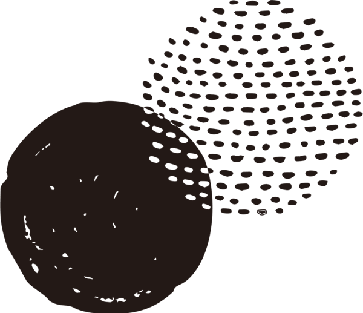
Revival Contact UsREVIVAL is not waiting for an industry to recover — REVIVAL is building the mechanism through which industries recover. We connect capital, operators, buyers and government around distressed industrial assets, starting with the reopening of Bangladesh's largest garment complex, Beximco.
Idle industrial capacity returned to work, at national scale.
A structured, audited route into a distressed-asset opportunity.
Certified production capacity, reliability, and quality control.
Where a distressed but fundamentally valuable industrial asset exists, REVIVAL brings together the capital, operator, buyer and strategic partners required to return it to productive use. Beximco is the first large-scale demonstration of that model — the proof of concept, not the definition of what REVIVAL is.
REVIVAL is an independent platform and fashion brand bringing together international/NRB capital, government facilitation, financial institutions, international operators, Japanese partners, global buyers and local industrial assets — with REVIVAL's own management and commercial platform coordinating all of it. If the Beximco initiative succeeds, the same model is designed to be repeated across other distressed industrial assets in Bangladesh.
Financing structured to fund reactivation without waiting on public bailout.
Policy support and investment-authority approval treating reactivation as a national priority.
A nominated bank manages disbursement, debt service and foreign-currency flow.
Production oversight and quality standards buyers already recognise.
Orders that fill production lines — the actual mechanism by which jobs return.
Existing factories, workforce and machinery — leased and operated, not rebuilt from zero.
REVIVAL is not a single-country operation. The platform is built on three capabilities that rarely sit together in one company — and the combination is what makes the model work.
The discipline, the standards and the long-term thinking Japanese buyers require. REVIVAL was founded here, out of research at Kyushu University, and is registered in Fukuoka.
Industrial-scale garment production alongside living craft traditions — Nakshi Kantha, Jamdani, Khadi — that no other production country can offer at the same time.
Production engineering and operational discipline, brought into the platform through REVIVAL's joint venture with Besting.
Where commercially appropriate, REVIVAL acts as a brand and buyer in its own right — placing orders into revived facilities and creating the demand that makes a reopening sustainable, rather than waiting for third-party orders to appear.
Bangladesh's largest vertically integrated garment complex — built to supply H&M, Zara, Marks & Spencer, PVH, Next and Target — stalled in the early 2020s under pandemic demand shocks and frozen trade finance. REVIVAL's reopening plan is the first large-scale demonstration of the platform model described above.
45,000+ livelihoods targeted for restoration
Large-scale export capacity reactivated
International capital & expertise mobilised
Major productive assets returned to operation
A model designed to expand beyond one industrial group
~2-year horizon to rebuild toward historical peak capacity
Track record — what this platform already brings to the table:
Besting's established manufacturing capability in Bangladesh
International buyer experience across major global apparel brands
Existing products and completed production runs
In-house design and product development capability
Reference rights within Beximco's established industrial ecosystem
International market relationships built over years of sourcing work
REVIVAL and Besting have secured land at the Chinese EPZ in Anwara, Chittagong, with a further site planned at the Japanese EPZ. REVIVAL is not only reactivating assets it leases — it is building capacity it will own and operate in its own right.
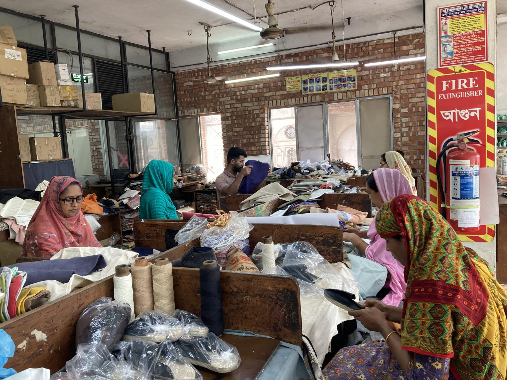
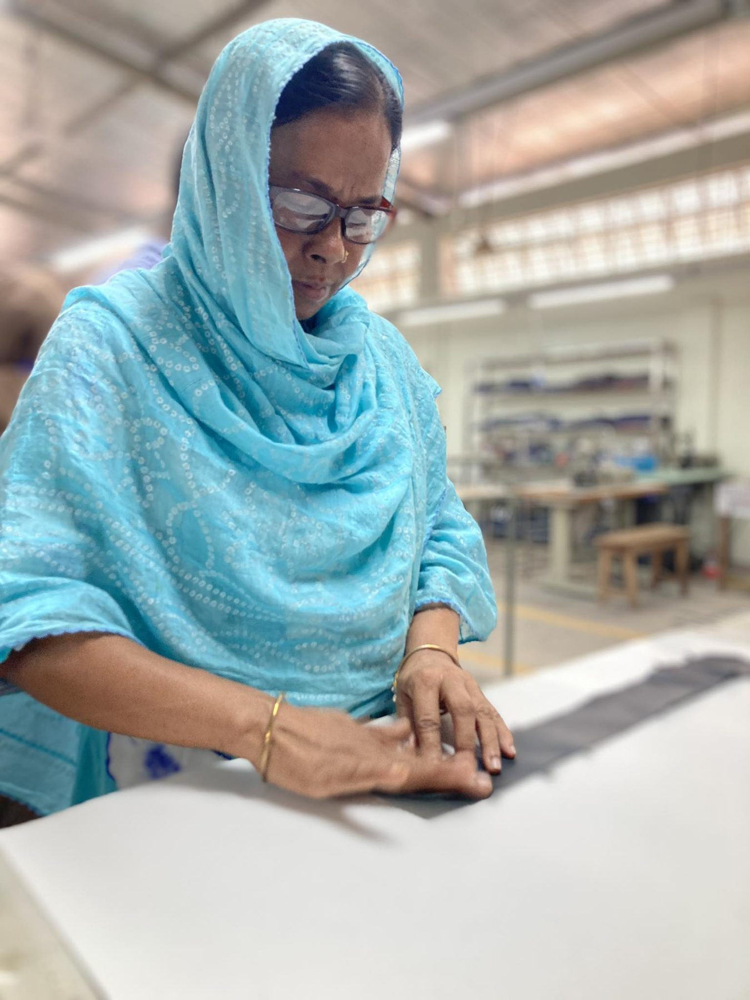
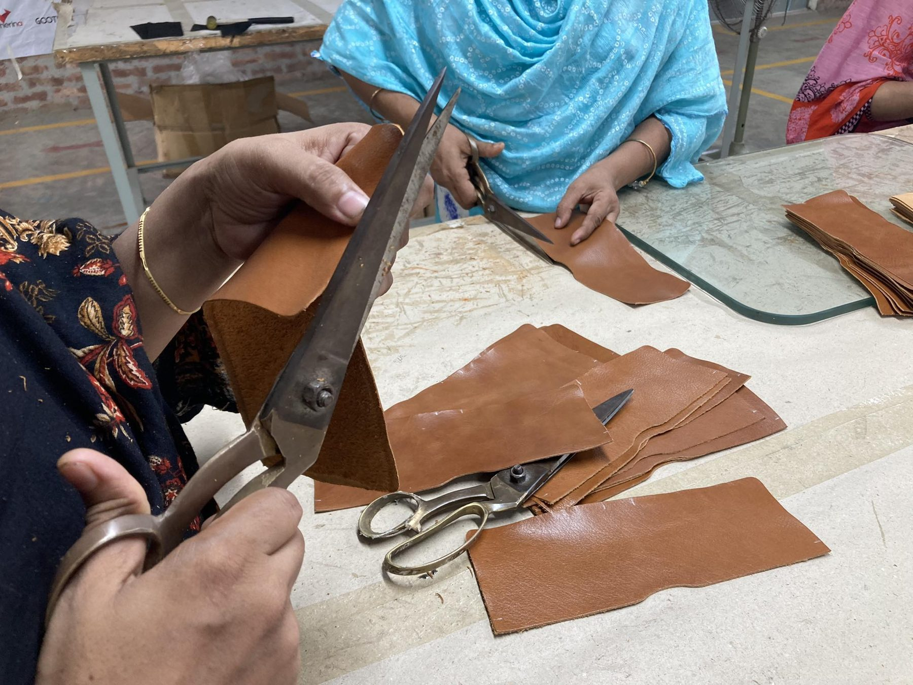
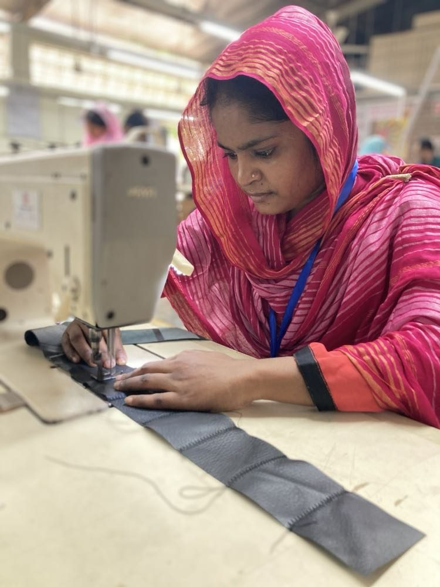
REVIVAL's leadership combines Bangladesh market knowledge, international business experience, Japanese relationships, investment capability, manufacturing operations and sustainability strategy.
B.Arch, BUET · Master's in Heritage & Environmental Design, Kyushu University. Founded REVIVAL from research at Kyushu University in 2018, inspired by Professor Muhammad Yunus's Three Zeros framework.
Independent audit & financial transparency
EY / Deloitte framework governing how funds are deployed and reported.
Government-level facilitation
Investment-authority approval treating industrial reactivation as a national priority.
Academic origin
Founded out of research at Kyushu University, on Professor Muhammad Yunus's Three Zeros framework.
Executive team
Chairman, CIO, CSO and COO appointed. Full profiles published shortly.
Relationships below are shown in three categories, so the status of each is clear at a glance.
Beximco's own client history already includes the brands your buyers benchmark against — H&M, Zara/Inditex, Marks & Spencer, Target, PVH and Next. REVIVAL's current focus is on converting that heritage into active, traceable OEM orders.
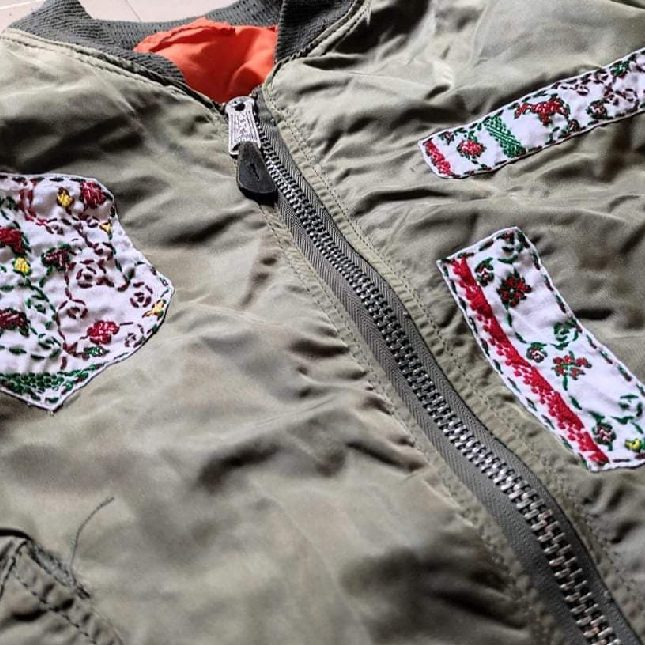
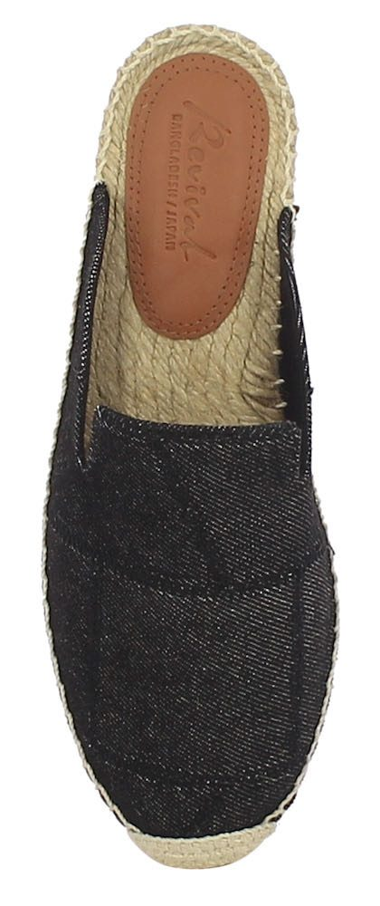
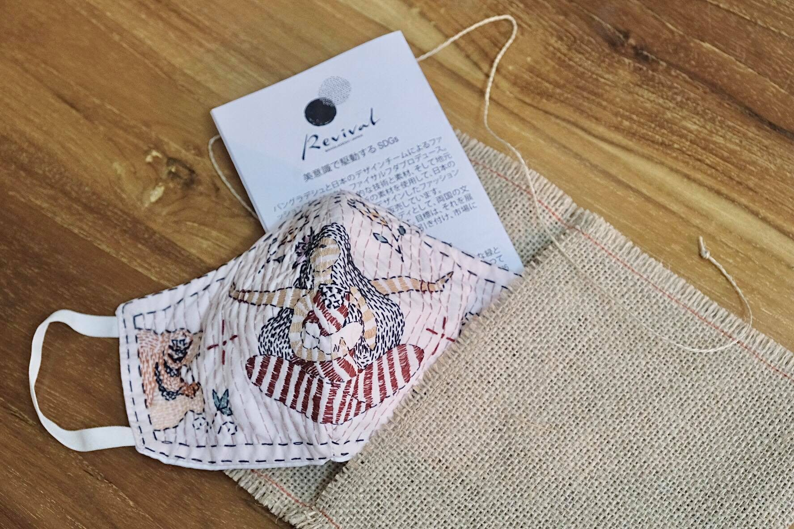
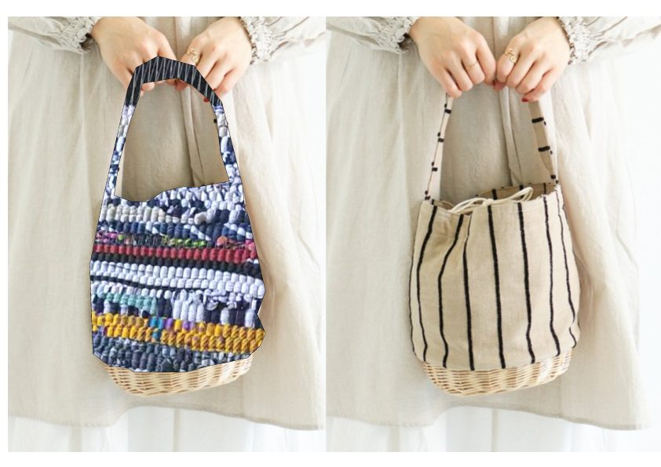
Founded from academic research combining Japan's circular culture with Bangladeshi craftsmanship.
Revival Group Co. Ltd & Revival-LLC are registered and operate from Fukuoka, Japan.
Japan's ethic of respect for material and long-term thinking is built into how REVIVAL designs its supply chain.
Production oversight and buyer introductions — including MUJI opportunities — run through this relationship.
Japanese in discipline. Bangladeshi in soul. Global in ambition. Commercial in execution. Human in impact. This is the register REVIVAL is built to operate in — a serious industrial transformation platform, not a charity, a conventional garment factory, or simply a fashion brand.
The intended message to a Japanese partner is direct: Bangladesh's productive capacity is open for business again, and REVIVAL is the platform built to connect that capacity to responsible Japanese buyers and investors.
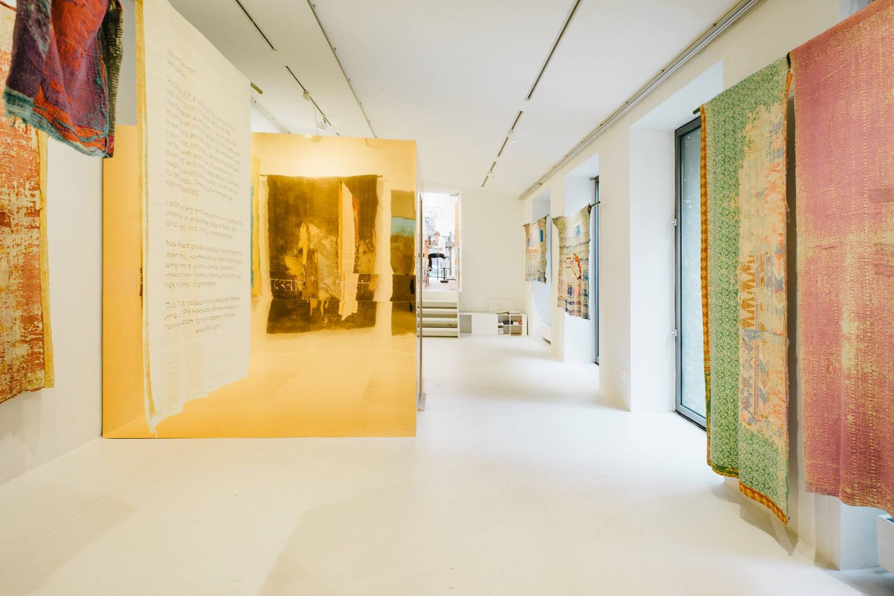
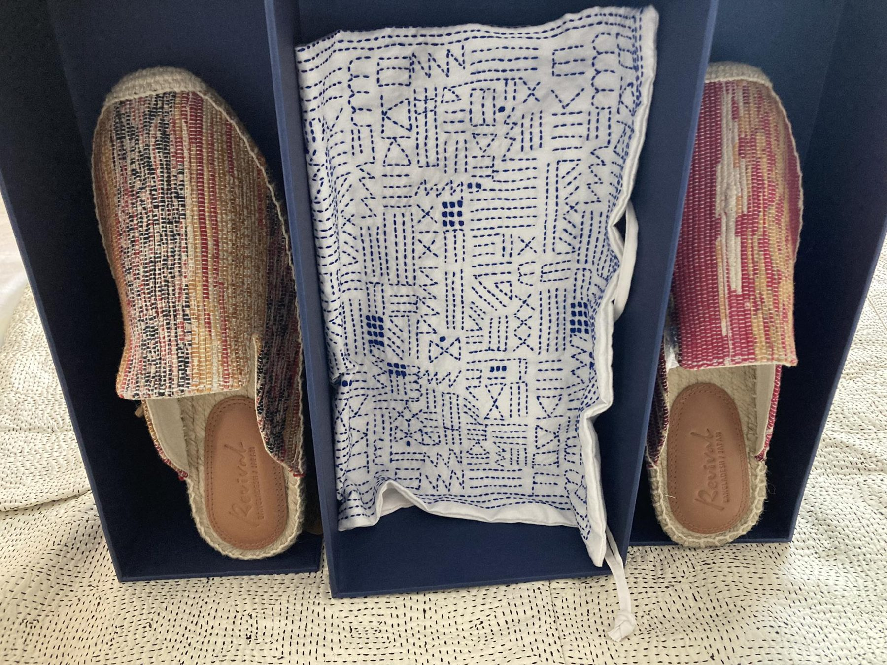
Fair-trade contracts and Fabric Credit payments replace piece-rate survival wages.
45,000+ livelihoods targeted for restoration through OEM orders, not seasonal spot buys.
Regenerative cotton, natural dye and closed-loop denim, verified kilogram by kilogram.
REVIVAL's runway-facing collection — Kioku Ori, "the art of weaving memory" — built from recycled denim and Nakshi Kantha embroidery, developed for the international runway platforms REVIVAL is targeting.
One-of-one jackets rebuilt from post-production denim waste, each carrying a Fabric Soul digital record — origin, artisan name, and verified carbon savings.
Our origin fiction, written for the Social Fiction Design Competition's "World of Three Zeros," imagines Dhaka in 2050: a river runs clear again, and Fabric Credits have become a circular currency. It's a narrative framework, not a financial projection — the underlying instrument, Fabric Credit, is a real, verifiable unit tied to diverted textile waste, structured for corporate Scope 3 reporting — the kind of instrument Japanese manufacturers and retailers increasingly need for their own reporting.
REVIVAL: The City That Wore Its Memory — Social Business Fiction, 2026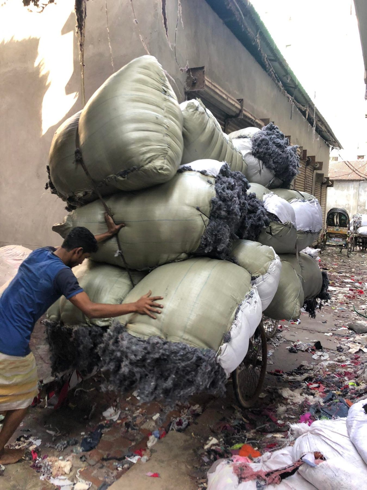
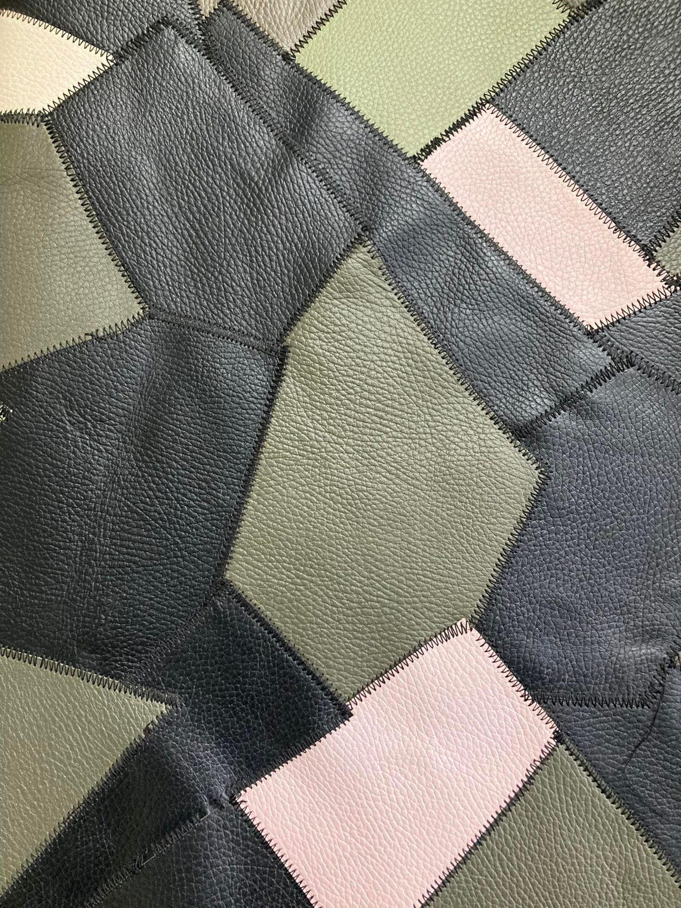
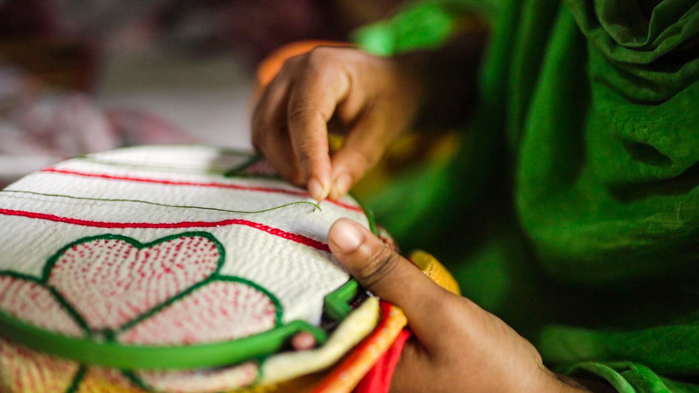
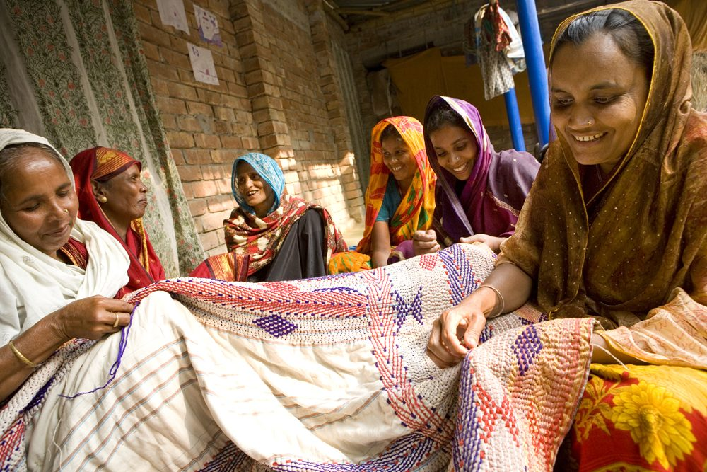
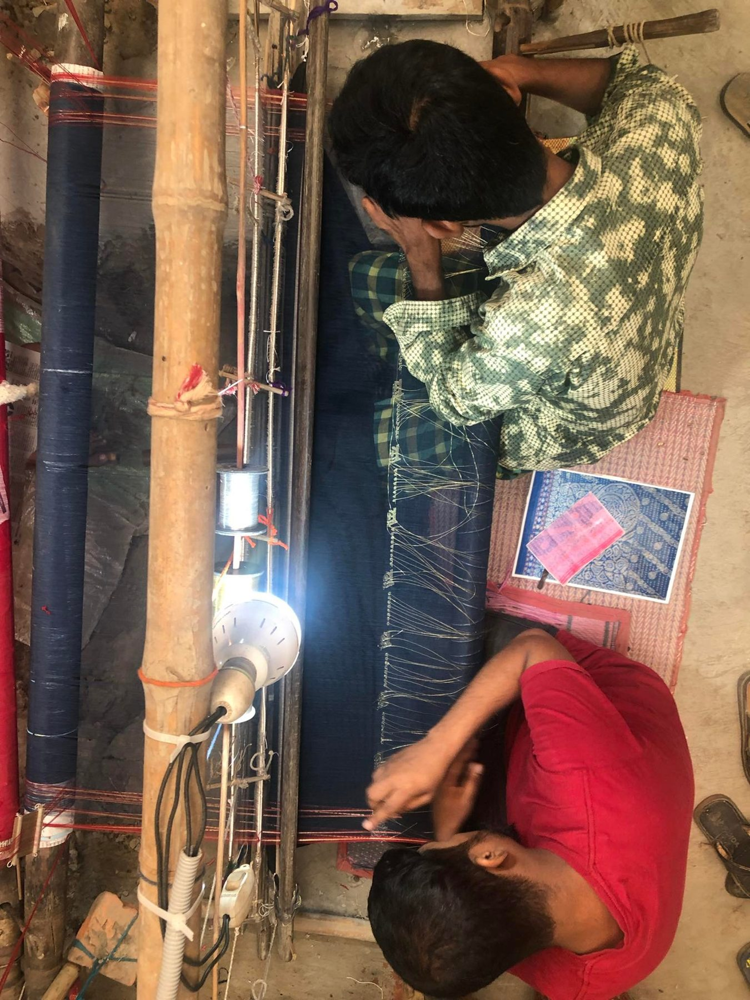
REVIVAL intends to take this story beyond Bangladesh — engaging the international fashion, manufacturing and investment community, and participating in industry events around the Tokyo and New York fashion ecosystems.
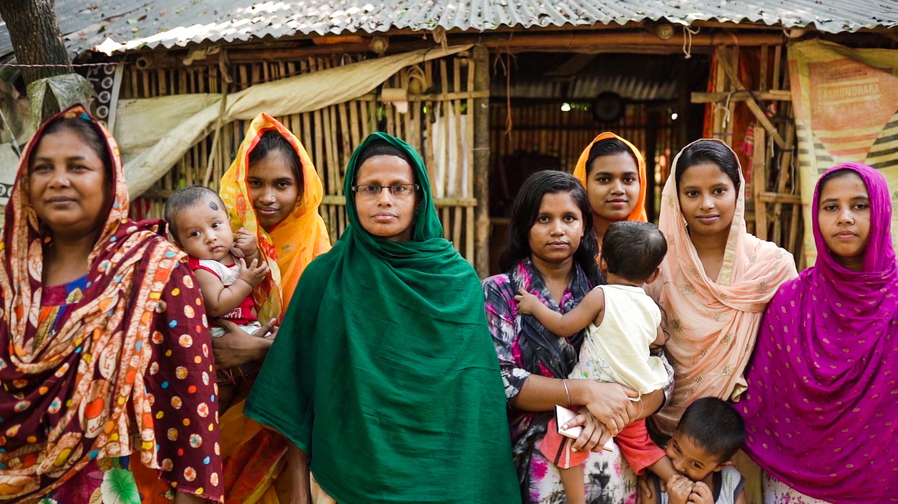
Choose the track that fits how your organisation works with Bangladesh — every route reaches the same team.
Policy engagement, employment impact, and the case for treating industrial reactivation as a national priority.
Contact REVIVAL Global →Structure, audit framework, and the model's scalability beyond a single industrial asset.
Request the Investment Brief →OEM production capacity, certifications, and a capsule or private-label collaboration route.
Talk to Our Buying Team →Revival Group Co. Ltd & Revival-LLC
3-5-33 Kotobukimachi, Hakata Ku,
Fukuoka-shi, Fukuoka-ken 812-0884, Japan
Mobile: +81 70-7648-6292
Revival Global Ltd.
House 431 (4th Floor), Road 30,
Mohakhali DOHS, Dhaka-1206, Bangladesh
Mobile: +880 1777-330663